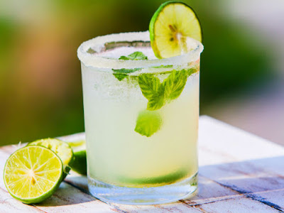
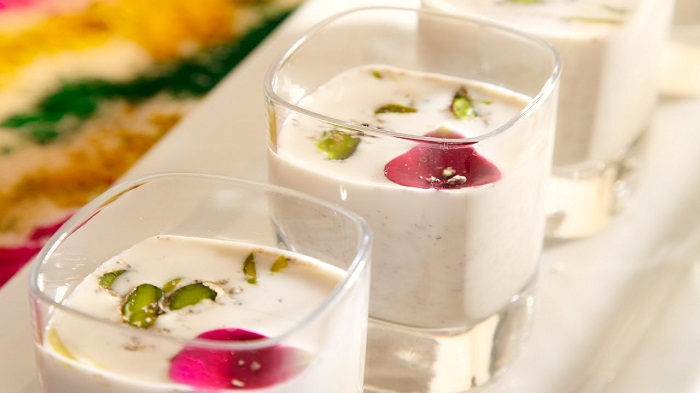
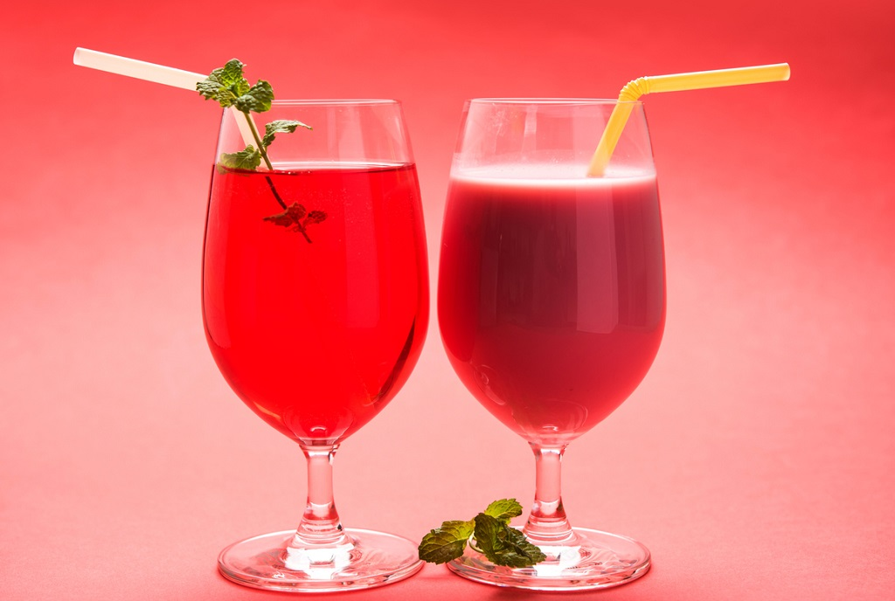
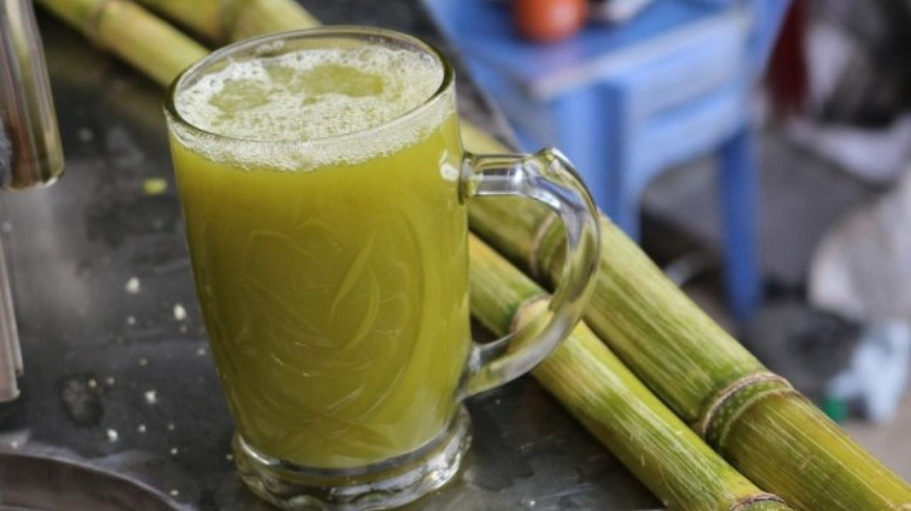
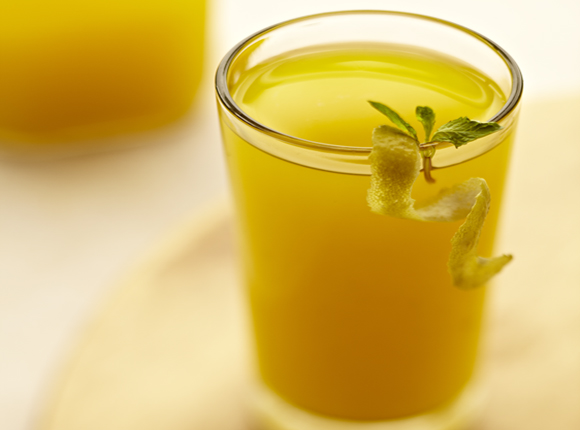
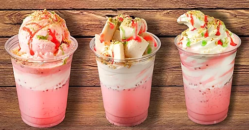

India's version of a lemonade. You can add flavor to it by adding
mint juice, roasted cumin powder, black salt. Make it sweet or salty.
Ingredients
2 lemons
1/2 cup sugar
Salt to taste
Black salt to taste
Fresh mint leaves as required
Ice cubes
Steps
Squeeze juice of lemons into a bowl. Add sugar, salt, black salt, few fresh hand torn mint leaves and mix well.
Add sufficient water and mix well till sugar dissolves.
Add ice cubes, pour into individual glasses and serve chilled garnished with a mint sprig.
Mango Mastaani
Thick mango milk shake with ice cream
Ingredients
1 big mango
1 cup milk
1 tablespoon sugar
1 scoop vanilla ice cream
1 teaspoon almond slivers
1 teaspoon sliced cashewnuts
4-5 raisins
Coarsely ground green cardamoms
Steps
Make a powder from seeds of cardamom.
Blend the mangoes along with milk and sugar.
Pour this in a glass add the vanilla ice-cream and then add almonds, cashew nuts, raisins, cardamom powder over it. Serve chilled.
Lassi
Simple refreshing yogurt-based beverage. Can be made salty or sweet.
Ingredients
3/4 cup hung yogurt
3/4 cup thick yogurt
1/2 cup milk + as required
1/4 cup powdered sugar
Ice cubes as required
Green cardamom powder a pinch
Almonds slivefed for garnish
Pistachios slivered for garnish
Saffron strands for garnish
Steps
Boil sufficient milk in a non-stick pan. Scrape off the cream and reserve.
Blend together hung yogurt, thick yogurt, powdered sugar, some ice cubes, ½ cup milk
and cardamom powder to a smooth mixture.
Pour into individual serving glasses. Top with some reserved cream
garnish with almond slivers, pistachio slivers and saffron strands and serve chilled.
Thandai

The word “thandai” means cooling or cools. Made with a mix of dry fruits, seeds and a few spices.
Ingredients
1 cup water
Sugar as required
2 tablespoon melon seeds
1/2 tablespoon aniseed
1/2 teaspoon rose water
1/4 cup dry rose petals
500 ml milk
2 tablespoon almonds
1 tablespoon poppy seeds
1/2 tablespoon green cardamom
1 teaspoon peppercorns
100 gram fennel seeds
Steps
Soak the almonds, poppy seeds, fennel seed and melon seeds in one cup water for 30 minutes and then grind all these ingredients
into to a fine paste and keep aside.
Bring milk to boil in a pan and add the saffron strands. Mix well. Add sugar and simmer till the sugar melts. Grind the
rose petals and peppercorns to a fine powder. Add the saffron strands and the water in which it was soaked.
Add the paste to the milk along with some cardamom powder. Mix well and simmer for 2 to 3 minutes. Turn off the flame and keep it in
a normal room temperature. Then refrigerate it for 2 to 3 hours. Garnish it with some crushed rose petals, saffron strands and chopped
almonds. Serve chilled.
Rooh Afza

A sweet rose scented and flavored syrup that can be mixed into water or swirled into a glass of milk
Ingredients
3.5 cups of water - chilled or at room temperature
Rooh afza syrup as required(available at Indian stores)
½ tablespoon sabja/basil seeds
Sugar as per your taste(optional)
Ice cubes(optional)
Steps
Soak the sabja/basil seeds in ¾ cup of water for half an hour.
In a glass jar or a bowl add 3.5 cups water. Add rooh afza syrup in the water as required.
Also add the soaked sabja seeds. Add the sugar as per your taste.
Add ice cubes, if you want to serve it cold. Stir everything well and serve.
Note: Instead of water, you can mix it with regular milk or almond milk.
Sugarcane Juice

The ever popular Indian juice to quench your thirst and give you a boast of energy. Excellent for jaundice.
Has digestive properties too!
Ingredients
Sugarcane juice extractor machine
Sugarcane
Masala Chai
A flavoured tea beverage made by brewing black tea with a mixture of aromatic Indian spices and herbs.
Ingredients
2 tablespoons tea leaves
6 green cardamoms
2-3 cloves
1 1/2 inch cinnamon stick
2 black peppercorns
1/4 teaspoon fennel seeds
1 1/2 inches peeled ginger
1 cup milk
3 tablespoons sugar
Steps
Put green cardamoms in a mortar, add cloves, cinnamon stick, black peppercorn and fennel seeds and crush with the pestle
to a coarse mixture. Transfer on a small plate.
Put ginger piece in the same mortar and and coarsely crush it with pestle. Boil 3 cups water in a deep sauce pan, add tea
leaves, spice mixture and crushed ginger and mix well. Continue to boil for 3-4 minutes.
Add milk and mix well. Add sugar and mix well. Cook till the sugar dissolves. Take the pan off the heat.
Strain the tea equally into 4 serving glasses and serve hot.
Jaljeera
Prepared from a plethora of soothing spice mix and provides many health benefits
Ingredients
4 tablespoon fresh mint leaves
4 tablespoon fresh coriander leaves
1 inch ginger piece
2 1/2 tablespoon lemon juice
2 tablespoon mango(amchur) powder
1/4 tablespoon ground pepper (Optional)
Black salt to taste
1 tablespoon roasted cumin powder
Ice cubes
Chilled lemon soda or chilled water as required
Lemon slices for garnish
Fresh mint leaves for garnish
Steps
Grind the ginger, mint leaves and coriander leaves with 1/4 glass water in the blender to make a fine paste.
Pour mint, coriander liquid into a jug. (You can pass it through the strainer to remove the herb remains, I like mine
without straining.)
Add the lemon juice, amchoor powder, roasted cumin powder, black salt, black pepper powder and stir well the mixture.
Add ice cubes and lemon soda or water and stir again.
Pour ‘Jal Jeera’ and garnish with a slice of lemon and mint leaves.
Aam ka Panna

Made using raw mangoes. Helps in preventing heat strokes and keep the body cool
Ingredients
1 kilogram green mangoes
3 cups sugar
1/4 teaspoon green cardamom powder
Pinch of saffron strands
1/4 teaspoon nutmeg powder
Ice cubes as required
Fresh mint sprigs for garnish
Steps
Wash and boil the mangoes and set aside to cool. Peel the mangoes; mash and strain the pulp.
Blend together mango pulp, sugar, cardamom powder, saffron and nutmeg powder to a smooth paste.
Pour spoonful of prepared mango paste into individual glasses. Add lots of ice cubes and top with chilled water.
Garnish with mint sprigs and serve chilled.
Falooda

Indian version of a cold dessert. Traditionally made by mixing rose syrup,
vermicelli, and sweet basil seeds with milk, often served with ice cream.
Ingredients
3 cups milk
1/2 packet soaked falooda
3 tablespoons sugar
1 teaspoon soaked basil seeds
2 tablespoons rose syrup
10-12 chopped cashewnuts
4 scoops vanilla ice-cream
Steps
Heat the milk with the sugar and bring to a boil. Set aside to cool. Place in a refrigerator to chill.
Add the soaked basil seeds to the milk, stir and chill it in the refrigerator.
Pour half a tablespoon of rose syrup into four wide-mouthed falooda glasses.
Pour the milk into each glass, top with two to three tablespoons of falooda, a scoop of vanilla ice cream
and a sprinkling of chopped cashew nuts. Serve at once.